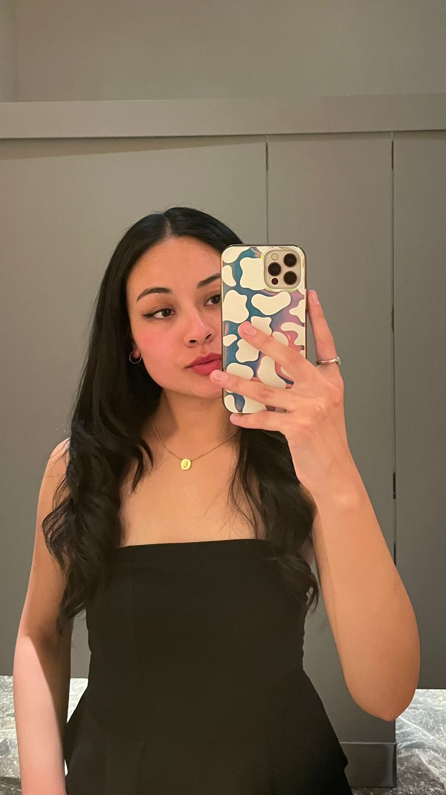
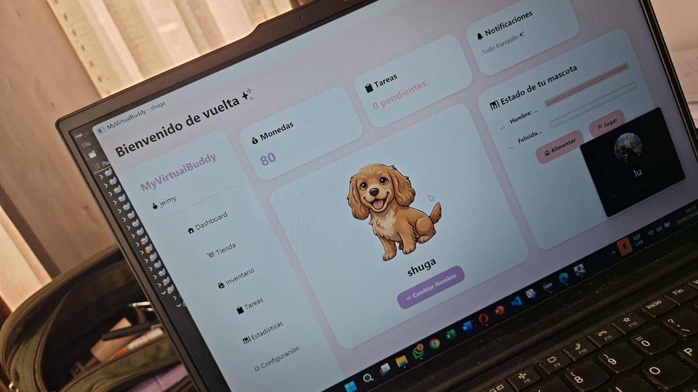

Ingeniería de Sistemas
Universidad Católica Boliviana "San Pablo"
Inicio: - Estado actual: En curso ()
Grado: Licenciatura en proceso
35% completado

Estudiante de Ingeniería de Sistemas
Apasionada por la tecnología, la innovación y el aprendizaje continuo.
La Paz, BoliviaSoy estudiante de Ingeniería de Sistemas con alto interés en la programación, la arquitectura de software y el desarrollo de soluciones tecnológicas innovadoras.
Entre mis principales fortalezas destacan la capacidad para trabajar en equipo y aprender constantemente, adaptándome a nuevos lenguajes y entornos de desarrollo estructurados.
Mi objetivo profesional es consolidar mis competencias técnicas en desarrollo web y programación orientada a objetos, colaborando en proyectos que generen un impacto positivo.
Universidad Católica Boliviana "San Pablo"
Inicio: - Estado actual: En curso ()
Grado: Licenciatura en proceso
35% completado
Institución: IEEE Computer Society UCB
- Presente
Participación en la logística, planificación y apoyo en talleres académicos y actividades de divulgación tecnológica organizadas para el estudiantado.
Principal logro: Integración exitosa en equipos multidisciplinarios de trabajo académico.
Institución: Computer Society UCB
- Presente
Coordinación ejecutiva de un espacio interdisciplinario que vincula cine, arte y principios de neurociencia para la comunidad universitaria.
Principal logro: Gestión del cronograma y difusión del proyecto a nivel institucional.
Institución: Universidad Católica Boliviana "San Pablo"
-
Diseño de algoritmos, implementación de persistencia de datos en ficheros .txt y desarrollo de sistemas básicos en Java.
Principal logro: Implementación limpia de principios de programación orientada a objetos (POO).
| Idioma | Lectura | Escritura | Conversación |
|---|---|---|---|
| Español | Avanzado | Avanzado | Nativo |
| Inglés | Intermedio | Intermedio | Intermedio |
Aplicación web proyectada como organizador de tareas y eventos académicos para mejorar la productividad estudiantil.
Tecnologías utilizadas: HTML5, CSS3, JavaScript, PHP
Rol desempeñado: Desarrolladora de interfaz y estructura
Resultado obtenido: Prototipo funcional con validación de formularios y almacenamiento básico.
Iniciativa enfocada en conectar el análisis cinematográfico con conceptos clave de neurociencia.
Recursos utilizados: Material audiovisual, guiones técnicos, presentaciones interactiva.
Rol desempeñado: Coordinadora general de contenido
Resultado obtenido: Realización de sesiones de debate y alta participación universitaria.
